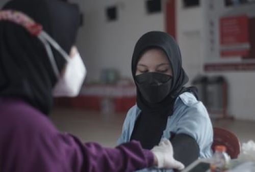
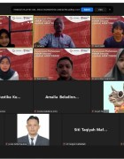
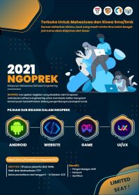
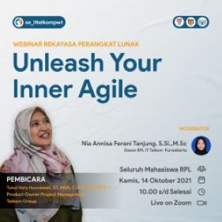
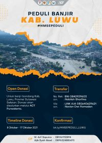
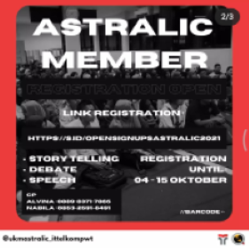

|
Prestasi ITTP ITTP mendapatkan prestasi dalam berbagai bidang, baik dalam skala nasional maupun internasional. |
Lebih Dekat Purwokerto Temukan suasana hidup dan belajar di Purwokerto bersama dengan keindahan dan kesejukan kotanya. |
Fasilitas dan Kegiatan Kampus Informasi tentang ragam kegiatan mahasiswa dan berbagai fasilitas di kampus ITTP. |
Virtual Tour Campus Kenali lingkungan kampus dengan lebih dekat. |


Kenapa Harus Teknologi Telkom Purwokerto
|
Kampus Cepat Kerja Terbukti rata-rata 83% lulusan bekerja sebelum wisuda |
Terakreditasi BAN PT Institut sudah terakreditasi "Baik Sekali" |
Go Internasional Memiliki 25 kerjasama internasional |
Kampus Nasional Mahasiswa berasal dari 31 provinsi di Indonesia |


TESTIMONI & OPINI
Kata Alumni
|
Arie Budi PrasojoBekerja di Indosat OoredooSaya sangat bangga menjadi alumni Institut Teknologi Telkom Purwokerto. Pengetahuan dan pengalaman yang saya peroleh selama kuliah, telah mengantarkan saya menuju karier sebagai Service Manajer di Indosat Ooredoo |
Hidni QafiahBekerja di PT.Siscom TechnologiesKuliah di Institut Teknologi Telkom Purwokerto memberikan banyak pengalaman menyenangkan dan juga hal yang bermanfaat bagi saya saat ini. Dari akademik hingga non-akademik, suasana kampus yang menyenangkan juga mendukung mahasiswa untuk berkembang. |
Dwi GiovanniBekerja di Detik.comInstitut Teknologi Telkom Purwokerto tidak hanya mengajarkan tentang pendidikan formal, juga tentang bagaimana menghadapi dunia setelah menyelesaikan pendidikan. Saya bangga menjadi bagian dari Institut Teknologi Telkom Purwokerto. |


Pojok Opini
|
Kampus Bangkitkan Desa Wisata Tidak terasa sudah dua tahun berlalu negara kita menghadapi pandemi virus covid-19. Korban jiwa dan kerugian materil di semua sektor pemerintahan hampir semuanya terdampak pandemi covid-19. Rasa kebingungan dan was-was akan terjadinya gelombang kedua nampak terlihat di wajah para pemimpin kita, tak terkecuali Bapak Presiden Jokowi Dodo dan Menteri Pariwisata Ekonomi Kreatif Sandiaga Uno. Ya, |
BERITA DAN ACARA
Berita ITTP
|
 Pendidikan Telkom Gelar Vaksinasi Massal untuk Civitas Kawasan Pendidikan Telkom dan Warga Purwokerto |
Tim Yakut dari ITTP Berhasil Meraih Juara 1 di GEMASTIK XIV Kategori Pengembangan Aplikasi Permainan |
 Upacara Penyambutan Mahasiswa Program PERMAI APERTI BUMN IT Telkom Purwokerto |

Acara ITTP
|
 HMSE 2021 Institut Teknologi Telkom Purwokerto THURSDAY | 14 OCTOBER 2021 |
 Webinar RPL "Unleash Your Inner Agile Zoom Meeting THURSDAY | 14 OCTOBER 2021 |
|
 HMSE Galang Donasi Peduli Banjir Kab.Luwu Institut Teknologi Telkom Purwokerto SUNDAY | 17 OCTOBER 2021 |
 Pendaftaran Member Astralic Institut Teknologi Telkom Purwokerto FRIDAY | 15 OCTOBER 2021 |
TV ITTP
KERJASAMA INSTITUSI DAN KORPORASI
|
|
INGIN LEBIH DEKAT DENGAN ITTP?
Yuk chat aja dan ikuti akun social media ittp
|
|
|
|
YoutubeOfficial IT Telkom Purwokerto |
|
Jl.D.I Panjaitan no 128. 53147, Jawa Tengah- Indonesia Telp : 0281-641629 WA : 081 126 161 16 Email : info@ittelkom-pwt.ac.id Negara: Indonesia |
Menu Prestasi Pendidikan Pengumuman Riset & Teknologi/p> Tentang ITTP |
Link Terkait Karir Kantor Urusan Internasional Yayasan Pendidikan Telkom |
Tentang Kami
Institut Teknologi Telkom Purwokerto adalah perguruan tinggi yang dikelola oleh Yayasan Pendidikan Telkom dan merupakan satu-satunya Institut di Jawa Tengah.
|
Yayasan Pendidikan Telkom
Cisanggarung No. 2 RT.002/RW. 007 Citarum Bandung Wetan, Telp : 0281-641629 WA : 081 126 161 16 Email : info@ittelkom-pwt.ac.id Negara: Indonesia |
Copyright © 2021 Institut Teknologi Telkom Purwokerto